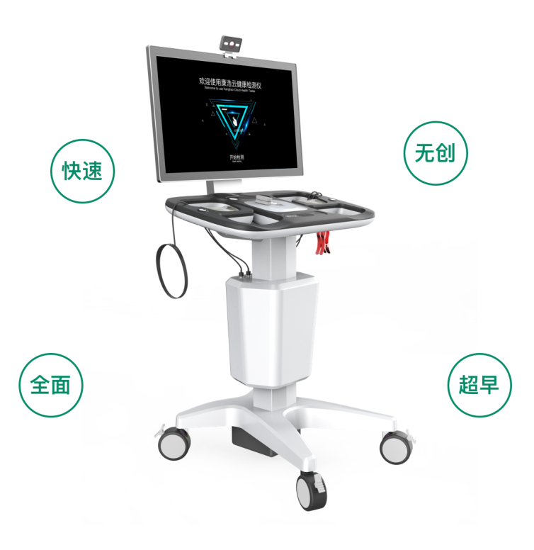
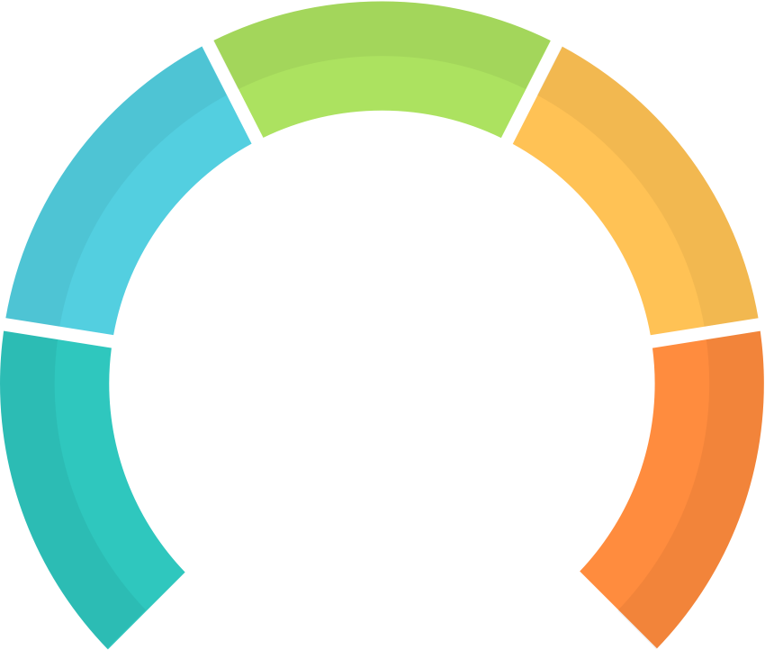
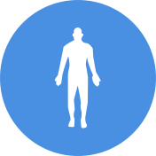

价值版
全身健康评估报告
CENERAL HEALTH REPORT
姓 名：{{insureSalesman.customerName}}
联系方式：{{insureSalesman.userTel}}
评估时间：{{inspectDateStr}}
姓 别：{{sex==1?'男':'女'}}
评估码：{{detectionCode}}
保险经纪人编号：{{insureSalesman.salesmanCode}}

以下是您的评估结果：


最佳状态
良好状态
一级风险
二级风险
三级风险


异常指标情况
中度风险（{{abnormalTarget.moderate.length}} 项）
{{item.targetName}}
轻度风险（{{abnormalTarget.mild.length}} 项）
{{item.targetName}}
皮肤报告
{{inspectSkinView.totalScore}} 分
肤质{{inspectSkinView.skinTypeResult}}
肤龄{{inspectSkinView.age}}
肤色{{skinColor[inspectSkinView.color]}}
重点关注
{{item.name}}{{item.score}}分{{item.count}} 个好于 {{item.percent}}%的人
护肤建议：
{{item.paraSuggestion}}
有待改善
{{item.name}}{{item.score}}分{{item.count}} 个好于 {{item.percent}}%的人
护肤建议：
{{item.paraSuggestion}}
继续保持
{{item.name}}{{item.score}}分{{item.count}} 个好于 {{item.percent}}%的人
护肤建议：
{{item.paraSuggestion}}
生理年龄
实际年龄{{age}}岁
生理年龄{{physicalAge}}岁
年龄差{{physicalAge-age}}
您的生理年龄低于实际年龄，身体年轻态，请继续保持哦！
您的生理年龄高于实际年龄，请注意管理健康哦！
您的生理年龄与实际年龄相当，请继续努力，力争变的更年轻哦！
身体实时状况
以下是您的评估结果：
健康活力值{{totalScore}}
体型
偏轻
健康
超重
肥胖
day{{index+1}}
名称荤菜素菜主食
早餐
- {{bre.foodName}}
- {{bre.foodName}}
- {{bre.foodName}}
早加餐
- {{ba.foodName}}
午餐
- {{lun.foodName}}
- {{lun.foodName}}
- {{lun.foodName}}
午加餐
- {{la.foodName}}
晚餐
- {{lun.foodName}}
- {{lun.foodName}}
- {{lun.foodName}}
异常指标详细建议
{{site.targetName}}
{{site.offset==2?'偏高':(site.offset==3?'偏低':'正常')}}
{{site.targetName}}：
正常轻度风险中度风险
=80,mid:site.score<80}">
指标解读
{{site.explain}}
改善建议
膳食建议
{{index+1}}、{{jinayi.personality}}
{{jinayi.simpleDescription}}
营养建议
{{index+1}}、{{jinayi.personality}}
{{jinayi.simpleDescription}}
运动和生活方式建议
{{index+1}}、{{jinayi.personality}}
微循环
心率{{ecg.heartRate}}
血氧饱和度{{bloodOxygen.bloodScore}}%
心脏功能{{ecg.paraResult}}
微循环{{bloodOxygen.heathScore}}%